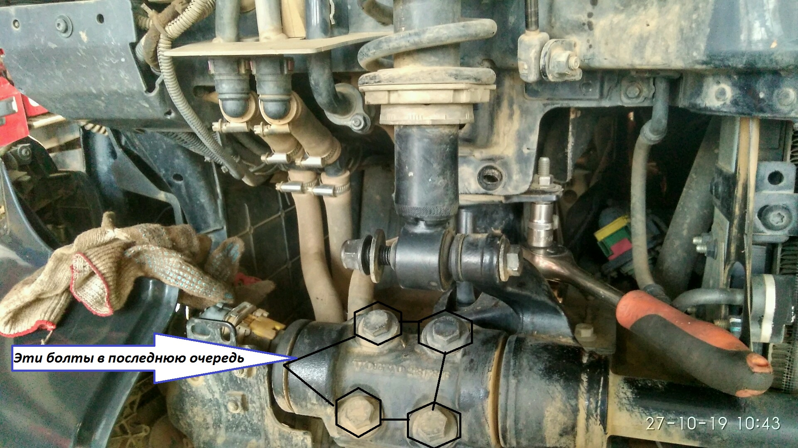
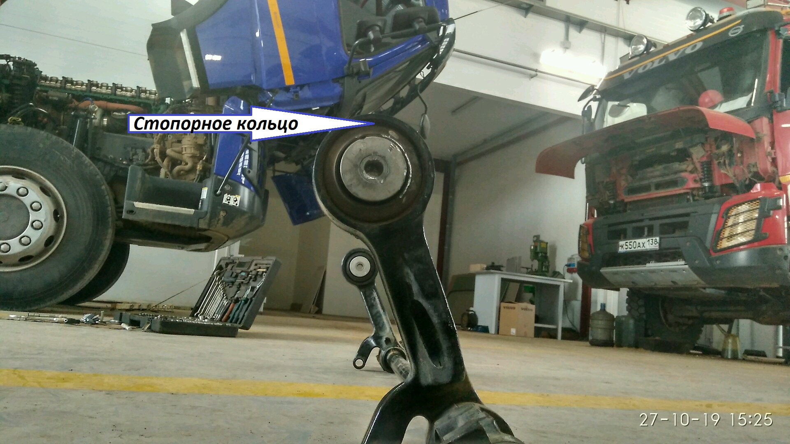
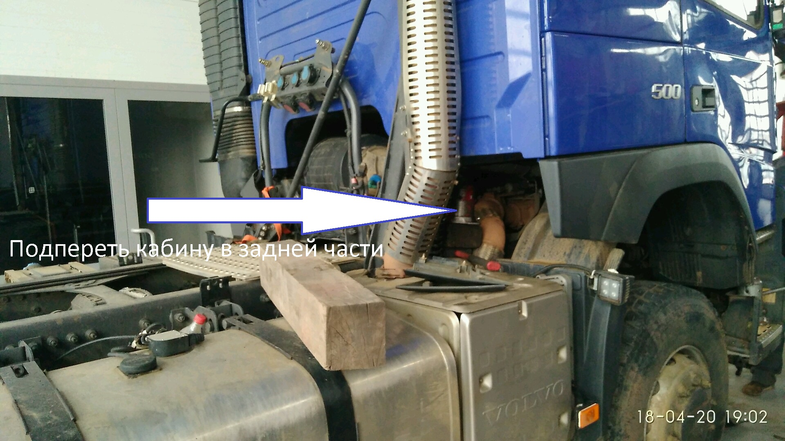
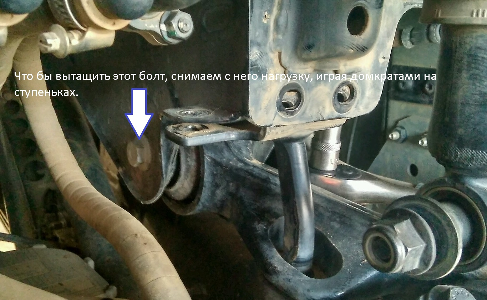

Реклама
Замена втулок стабилизатора кабины
Время выполнения:
? часов.Инструмент:
- Кран балка
- Домкрат
- Ключ *21
- Ключ *18
- Ключ торцовый или головка *18
- Ключ торцовый или головка *21
- Ключ торцовый или головка *10
- Шестигранник*18
- Пресс
Порядок действий:
- Поставить противооткаты
- Поднять кабину.
- Открутить подушки с 2-х сторон кабины. Можно не до конца, а только ослабить винты. Использовать шестигранник. Если этого не сделать, то потом сложно будет это сделать с передней стороны кабины. Не хватит усилия чтобы сорвать винты из-за ограниченного доступа.
- Опустить кабину.
- Защитить стекло кабины от случайных повреждений
- Зацепить кабину на мягкий строп
- Сделать натяжку
- Снять облицовку кабины 3 элемента. Элементы 1 и 2 крепятся на клипсах. Аккуратно натянуть и резким движением на себя снять. Элемент 3 крепится болтами. Один посередине в районе пальца для буксировки. Остальные по бокам.
- Открутить крепления подушки и амортизатора и всю перефирию. Основное крепление стабилизатора, по 4 болта с двух сторон, в последнюю очередь. Смотреть фото.
- Снять стабилизатор
- Чтобы выбить старые втулки стабилизатора, вдавливаем немного пресом втулку с внешней стороны, что бы можно было зацепиться и вытащить стопорное кольцо.
- Выбиваем легким движением старую втулку, ударом по ней с внутренней стороны.
- Вставляем новые втулки и ставим стопорное кольцо.
- Ставим стабилизатор, подушки на место.
- Подушки, если считаете, что затянуто не достаточно прочно, можно будет протянуть после всей сборки, опрокинув кабину.
- Проверяем протяжку всех соеденений
- Ставим на место облицовку.
- Опускаем кабину
ЛайфХак!!! Если не хватает пространства что бы сделать оборот воротком с головкой, то нужно снять головку, повернуть на одну грань и одеть снова на вороток.
Полезные ссылки по теме:



Если нет возможности вывесить кабину
Порядок действий:
Порядок действий такой же как при выполнении ремонта с кран балкой. Но перед разборкой важно выставить кабину определённым образом, что бы снять нагрузку с демонтируемых деталей.
Для этого:
- Поставить противооткаты
- Поднять кабину.
- Открутить подушки с 2-х сторон кабины. Смотреть картинку. Можно не до конца, а только ослабить винты. Использовать шестигранник. Если этого не сделать, то потом сложно будет это сделать с передней стороны кабины. Не хватит усилия чтобы сорвать винты из-за ограниченного доступа.
- Опустить кабину.
- Немного поднять кабину. Что бы только вышла из замков на задних амортизаторах.
- Установить домкраты на ступеньки. Смотреть картинку.
Осторожнее с этими домкратами, чтобы не сломать ступеньки. Впервую очередь снимать нагрузку нужно с этих домкратов, и только потом с остальных. - Установить домкрат под заднюю часть кабины, что бы кабина не ушла назад. Смотреть картинку
- Если есть возможность можно подпереть домкратом кабину ещё в какой нибудь точке. Смотреть картинку
- Что бы вытащить болт крепления стабилизатора кабины, нужно играть по высоте домкратами установленными на ступеньках. Смотреть картинку
- Если есть возможность можно подпереть домкратом кабину ещё в какой нибудь точке. Смотреть картинку
- Что бы снять нагрузку с передних амортизаторов кабины и вытащить болт крепления амортизаторов, нужно установить на них стяжки пружин. Смотреть картинку


